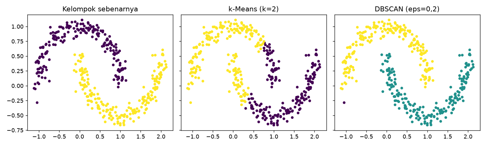

DBSCAN¶
Tujuan pembelajaran¶
- Menjelaskan klastering berbasis kepadatan: titik inti, titik batas, dan noise.
- Memilih
epsdanmin_samplesdengan bantuan jarak ke tetangga. - Mengenali kapan DBSCAN unggul dan kapan sulit digunakan.
Intuisi¶
DBSCAN (Density-Based Spatial Clustering of Applications with Noise) mendefinisikan klaster sebagai daerah yang padat, dipisahkan daerah yang jarang. Dua parameter:
eps(\(\varepsilon\)): radius lingkungan sebuah titik.min_samples: jumlah minimum titik (termasuk dirinya) di dalam radius agar titik menjadi titik inti (core point).
Titik inti yang saling terjangkau membentuk satu klaster; titik batas berada di lingkungan titik inti tetapi bukan titik inti; sisanya adalah noise (label -1). Tidak perlu menentukan jumlah klaster, klaster dapat berbentuk bebas, dan outlier otomatis ditandai.
| Aspek | Keterangan |
|---|---|
| Kelebihan | Bentuk klaster bebas, mendeteksi noise, tanpa menentukan \(k\) |
| Keterbatasan | Sensitif pada eps; sulit bila kepadatan antar-klaster berbeda; kurang efektif pada dimensi tinggi |
| Hyperparameter penting | eps, min_samples, metric |
| Praproses | Scaling wajib |
Memilih eps: hitung jarak tiap titik ke tetangga ke-min_samples, urutkan, lalu cari "siku" (lonjakan). Nilai eps di sekitar siku memisahkan titik padat dari titik terpencil.
Implementasi langkah demi langkah¶
Bulan sabit sintetis (400 titik, derau kecil) untuk memperlihatkan keunggulan DBSCAN, lalu Wine (13 dimensi) untuk memperlihatkan kesulitannya. Program examples/clustering/dbscan.py; program lengkap ada di akhir bagian ini.
Langkah 1: data dan fungsi ringkasan¶
| dbscan.py | |
|---|---|
make_moons(...) membuat dua bulan sabit; y adalah kelompok sebenarnya (hanya untuk ARI). Fungsi summarize(labels) menghitung jumlah klaster dan persentase noise. DBSCAN memberi label -1 pada titik noise, sehingga set(labels) - {-1} adalah himpunan klaster nyata (tanpa -1), dan np.mean(labels == -1) adalah proporsi titik noise.
Langkah 2: pengaruh eps¶
Konsep. eps adalah radius lingkungan. Terlalu kecil → hampir semua titik menjadi noise dan klaster pecah; terlalu besar → semuanya menyatu menjadi satu klaster.
| dbscan.py | |
|---|---|
DBSCAN(eps=eps, min_samples=5).fit_predict(X) mengelompokkan data dan mengembalikan label (−1 = noise). min_samples=5 berarti sebuah titik inti harus memiliki minimal 5 titik (termasuk dirinya) dalam radius eps.
eps klaster noise(%) ARI
0.05 15 77.5 0.005
0.1 11 6.2 0.236
0.2 2 0.2 0.995
0.3 1 0.0 0.000
0.5 1 0.0 0.000
1.0 1 0.0 0.000
Interpretasi. eps=0,05 membuat 15 klaster dengan 77,5% noise (terlalu kecil); eps=0,1 menghasilkan 11 klaster (ARI 0,236); eps=0,2 menemukan 2 klaster dengan hanya 0,2% noise (ARI 0,995); eps≥0,3 menggabungkan semuanya menjadi 1 klaster (ARI 0).
Langkah 3: memilih eps dari jarak ke tetangga¶
| dbscan.py | |
|---|---|
| Kode | Penjelasan |
|---|---|
NearestNeighbors(n_neighbors=k).fit(X).kneighbors(X) |
Untuk tiap titik, mencari k tetangga terdekat dan jaraknya. |
dist[:, -1] |
Kolom terakhir: jarak ke tetangga ke-k (yang paling jauh di antara k tetangga). |
np.sort(...), np.percentile(kdist, [50, 90, 95, 99]) |
Jarak diurutkan; persentil menunjukkan seberapa cepat jarak melonjak. |
Interpretasi. Jarak ke tetangga ke-5 pada persentil 50/90/95/99 adalah 0,078; 0,115; 0,139; 0,200. Nilai eps=0,2 (persentil 99) berhasil di sini; aturan ini hanya panduan, bukan rumus pasti.
Langkah 4: perbandingan dengan k-Means¶
Hasil. Pada bulan sabit DBSCAN ARI 0,995 vs k-Means 0,233. DBSCAN menandai 1 titik sebagai noise.
Langkah 5: DBSCAN pada data berdimensi tinggi (Wine)¶
Wine distandardisasi (13 fitur) lalu DBSCAN dicoba dengan lima nilai eps; label kultivar yw hanya untuk ARI.
Wine terstandardisasi, min_samples=5
eps klaster noise(%) ARI
1.5 0 100.0 0.000
2.0 5 47.8 0.220
2.5 1 13.5 0.005
3.0 1 6.2 -0.006
3.5 1 3.4 -0.008
Interpretasi. eps=1,5 menandai seluruh data sebagai noise; eps=2,0 menghasilkan 5 klaster dengan 47,8% noise (ARI 0,220); eps≥2,5 menghasilkan 1 klaster (ARI ≈ 0). Pada dimensi tinggi, jarak antar-titik cenderung seragam sehingga kepadatan sulit dibedakan; DBSCAN tidak menemukan tiga kultivar, padahal k-Means menemukannya (ARI 0,897). Tidak ada algoritma yang unggul di semua data.
Langkah 6: gambar¶
Tiga grafik berdampingan memakai sumbu yang sama (sharex, sharey): kelompok sebenarnya, hasil k-Means, dan hasil DBSCAN; warna menunjukkan label klaster.

Cara membaca. Sumbu-x dan sumbu-y adalah dua fitur sintetis. Panel kiri menunjukkan dua bulan sabit sebenarnya; k-Means (tengah) memotongnya dengan batas lurus sehingga kedua bulan tercampur (ARI hanya 0,233); DBSCAN (kanan) mengikuti bentuk melengkung dan memisahkan kedua bulan dengan benar.
Program lengkap (dbscan.py)
Kesalahan umum¶
Hindari
- Memakai
epstanpa scaling dan tanpa melihat jarak ke tetangga. - Menganggap hasil dengan banyak noise atau satu klaster sebagai "tidak ada struktur".
- Memakai DBSCAN pada data berdimensi tinggi tanpa reduksi dimensi.
- Mengharapkan DBSCAN menangani klaster dengan kepadatan berbeda jauh.
Latihan¶
- Naikkan
min_samplesmenjadi 10 dan 20 pada bulan sabit. Bagaimanaepsterbaik bergeser? - Tambahkan derau (
noise=0.2) padamake_moons. Apakah DBSCAN masih unggul? - Terapkan PCA ke 3 komponen pada Wine sebelum DBSCAN dan coba lagi.
Ringkasan¶
DBSCAN menemukan klaster padat berbentuk bebas dan menandai noise, tanpa menentukan jumlah klaster. Parameter eps krusial dan sulit pada dimensi tinggi.
Berikutnya: Agglomerative Clustering.